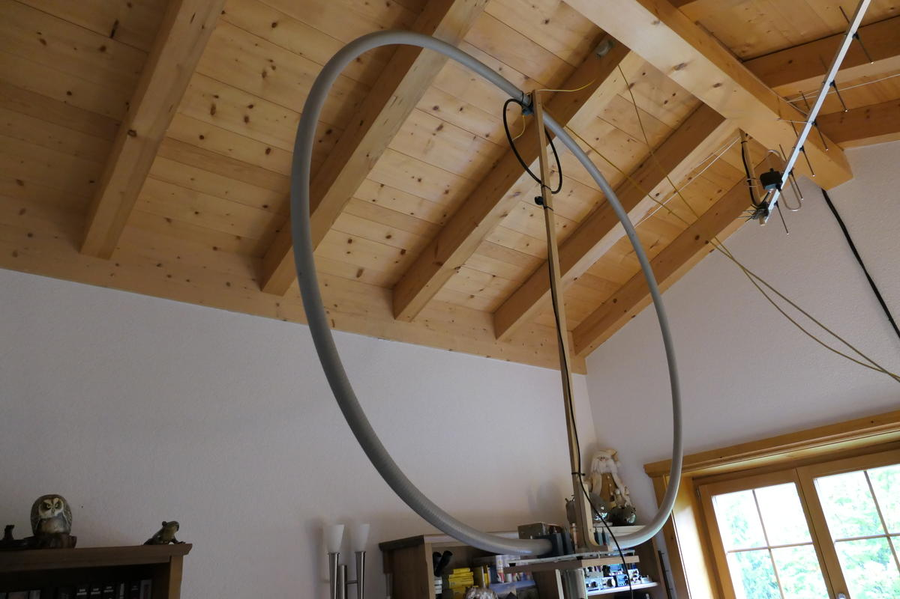
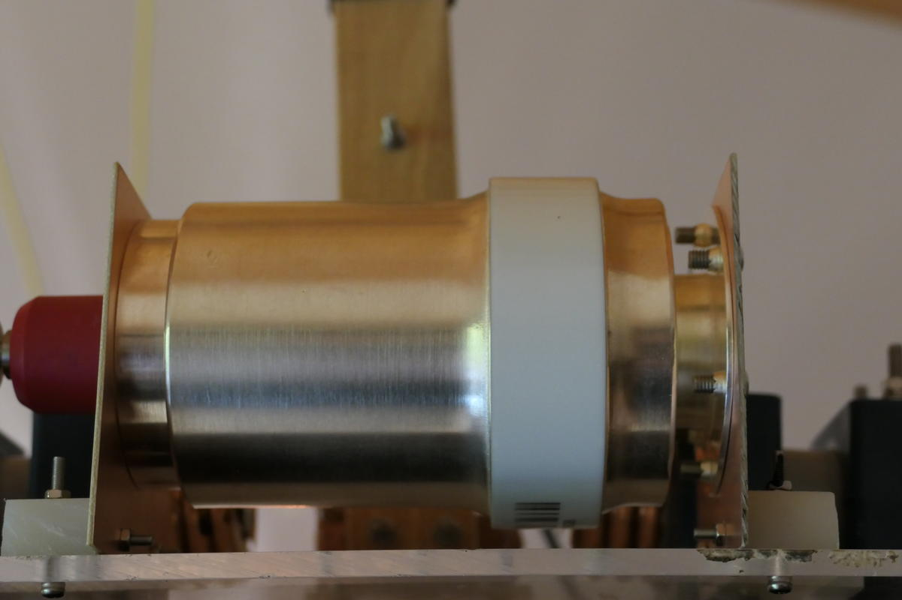
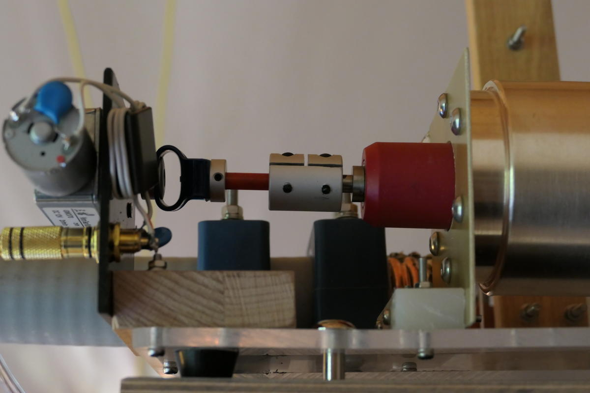

Homemade magnetic loop made from 1-1/4 heliax corrugated coaxial cable with 1.9 m loop diameter.

A 500 pF Comet vacuum capacitor is used. For the 160 m band, two additional fixed Comet vacuum capacitors are switched in.

Tuning is done via a motor.